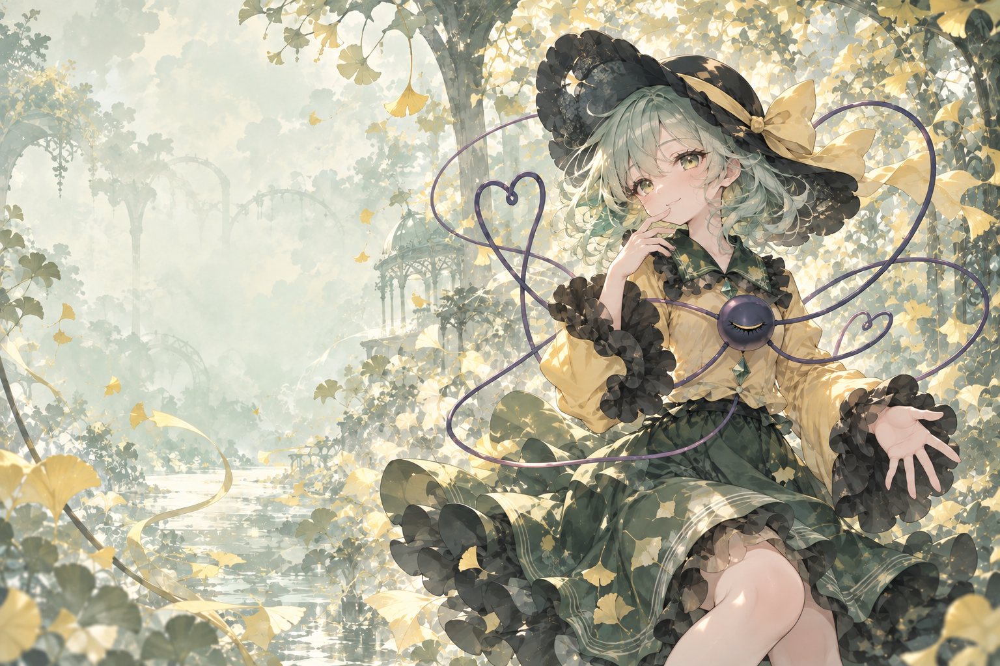

HELLO, WORLD / はじめまして
故事，从这里开始✧
01 / PUBLICATIONS
论文一览
02 / TOOLBOX
技能补给站
あしたも、少しずつ。
明天，也一点一点前进。
语言学习 · 日々の積み重ね
LET'S CONNECT / また会いましょう

✦ WELCOME TO MY LITTLE UNIVERSE
在代码与无意识之间
心怀热爱，让世界清晰一点。
计算机视觉与图像复原
一半严谨探索，一半浪漫想象。